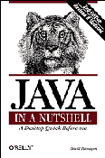

<!-- This example is from JavaScript: The Definitive Guide, 3rd Edition.   -->
<!-- That book and this example were Written by David Flanagan.            -->
<!-- They are Copyright (c) 1996, 1997, 1998 O'Reilly & Associates.        -->
<!-- This example is provided WITHOUT WARRANTY either expressed or implied.-->
<!-- You may study, use, modify, and distribute it for any purpose,        -->
<!-- as long as this notice is retained.                                   -->

<!-- This form contains one of everything. -->
<FORM NAME="form" ACTION="javascript:void(0)">
<INPUT NAME="button" TYPE=button VALUE="Button"><BR>
<INPUT NAME="reset" TYPE=reset><BR>
<INPUT NAME="submit" TYPE=submit><BR>
<INPUT NAME="radio" TYPE=radio> Radio Button<BR>
<INPUT NAME="checkbox" TYPE=checkbox> Checkbox<BR>

Select 1: <SELECT NAME="menu">
<OPTION>Option 1</OPTION><OPTION>Option 2</OPTION><OPTION>Option 3</OPTION>
</SELECT>

Select any: <SELECT MULTIPLE NAME="list">
<OPTION>Option 1</OPTION><OPTION>Option 2</OPTION><OPTION>Option 3</OPTION>
</SELECT><BR>

Text: <INPUT NAME="text" TYPE=text><BR>
Password: <INPUT NAME="password" TYPE=password><BR>
File: <INPUT NAME="fileupload" TYPE=file><BR>
Textarea: <TEXTAREA NAME="textarea" ROWS=2 COLS=20></TEXTAREA><BR>
</FORM>

<!-- Here are a couple more objects that support event handlers. -->
Link: <A HREF="javascript:void(0)">This is a link</A><BR>
Image: 

<SCRIPT>
// Create a new window for our event handler to display event details in.
var ewin = window.open("", "EventTester", 
                       "width=300,height=600,scrollbars,resizable,menubar");

// Figure out whether this is Navigator or IE. Assume version 4.
var isNav = (navigator.appName.indexOf("Netscape") != -1);
var isIE = (navigator.appName.indexOf("Microsoft") != -1);

// This general purpose event handler displays details about the event
// in the window we created above. It has vendor-dependent sections
// to deal with the differences in the Event object.  
// Because events often arrive in rapid bursts (such as key down/key up 
// pairs), this handler takes precautions to prevent these events from
// overwriting each other. It uses setTimeout() and removeTimeout() to
// arrange that the Document object not be closed until a second has passed
// without the arrival of any straggling events. Any events that arrive
// within that one-second window will be appended to the end of the document
// instead of overwriting the document.
function handler(e) {
  var d = ewin.document;        // Shorthand
  if (!handler.docopen) {       // If the document is not already open
      d.open("text/plain");     // ...open it as plain text.
      handler.docopen = true;
  }

  // If we're in Navigator, report event details in this way.
  if (isNav) {
    d.writeln("Type: " + e.type);
    if (e.target) d.writeln("Target: " + 
                            Object.prototype.toString.apply(e.target));
    if (e.target.name) d.writeln("Target name: " + e.target.name);
    if (e.x || e.y) d.writeln("X: " + e.x + " Y: " + e.y);
    if (e.which) d.writeln("which: " + e.which);
    if (e.modifiers) d.writeln("modifiers: " + e.modifiers);
  }

  // If we're in Internet Explorer, first copy the event from the 
  // global event variable, then report its details. Finally, set
  // the cancelBubble property so it doesn't bubble and get reported 
  // multiple times.
  if (isIE) {
     e = window.event;   // Grab the event.
     d.writeln("Type: " + e.type);
     if (e.srcElement && e.srcElement.name)
         d.writeln("srcElement name: " + e.srcElement.name);
     if (e.clientX || e.clientY) 
         d.writeln("X: " + e.clientX + " Y: " + e.clientY);
     if (e.button) d.writeln("button: " + e.button);
     if (e.keyCode) d.writeln("keyCode: " + e.keyCode);
     if (e.altKey) d.writeln("altKey");
     if (e.ctrlKey) d.writeln("ctrlKey");
     if (e.shiftKey) d.writeln("shiftKey");

     // We've reported this event, and don't want our container to
     // report it too, so don't let it bubble up any further.
     e.cancelBubble = true;  
  }
  d.writeln();  // Put a blank line between events.

  // Arrange to close the document a second from now, resetting any timer
  // set by a previous event.
  if (handler.timeoutid) ewin.clearTimeout(handler.timeoutid);
  handler.timeoutid =
       setTimeout("ewin.document.close(); handler.docopen=false;",
                        1000);
}

// This function registers the event handler defined above on all possible
// event handlers for the specified object. Note that when using this 
// program as a diagnostic tool, you may find that you get too many
// annoying blur, focus, mouseover, and mouseout events. If so, simply
// comment those event handlers out here.
function addhandlers(o) {
    o.onabort = handler;        o.onblur = handler;
    o.onchange = handler;       o.onclick = handler;
    o.ondblclick = handler;     o.onerror = handler;
    o.onfocus = handler;        o.onkeydown = handler;
    o.onkeypress = handler;     o.onkeyup = handler;
    o.onload = handler;         o.onmousedown = handler;
    o.onmouseout = handler;     o.onmouseover = handler;
    o.onmouseup = handler;      o.onmove = handler;
    o.onreset = handler;        o.onresize = handler;
    o.onselect = handler;       o.onsubmit = handler;
    o.onunload = handler;
}

// Now use addhandlers() to register all event handlers on all 
// objects of interest in the document.
addhandlers(window);
addhandlers(document);

// Add handlers to all links.
for(var d = 0; d < document.links.length; d++)
    addhandlers(document.links[d]);

// Add handlers to all images.
for(var d = 0; d < document.images.length; d++)
    addhandlers(document.images[d]);

// Add handlers on all forms and all form elements.
for(var d = 0; d < document.forms.length; d++) {
    addhandlers(document.forms[d]);
    for(var e = 0; e < document.forms[d].elements.length; e++)
        addhandlers(document.forms[d].elements[e]);
}
</SCRIPT>
